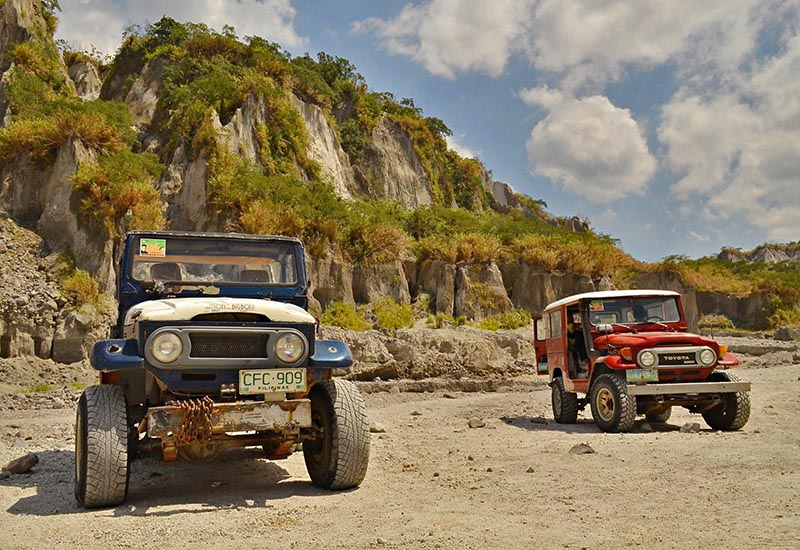

Mount Pinatubo
| Located | Famous For | Travel Hours From Manila | Activities |
|---|---|---|---|
| Zambales, Pampanga, and Tarlac, Philippines | Its beautiful crater lake, formed after the 1991 eruption. The lake's turquoise waters and the surrounding landscapes make it a stunning destination. | Around 2-3 hours by car. | Trekking, 4x4 off-road adventure, boat ride on the crater lake, and sightseeing. |


| Travel Tips |
|---|
|
Best Time to Visit The best time to visit Mt. Pinatubo is during the dry season, from November to April. This period offers clear skies and optimal conditions for trekking and exploring the stunning crater lake. |
|
How to Get There You can reach Mt. Pinatubo by taking a 4x4 vehicle from Capas, Tarlac, which is about a 2-hour drive from Manila. Alternatively, several tour operators offer packages that include transportation from Metro Manila. |
|
Where to Stay Consider staying in nearby towns like Capas or Tarlac City, where you can find a range of accommodations from budget hostels to comfortable hotels. Booking a tour package often includes transportation and lodging options. |
|
Pack Light, Pack Smart Wear comfortable clothing and sturdy hiking shoes, as the trek can be challenging. Don’t forget essentials like sunscreen, a hat, and plenty of water. A lightweight backpack is useful for carrying your gear during the hike. |
|
Explore Beyond the Crater Lake While the crater lake is the highlight, take time to explore the surrounding landscapes, including unique rock formations and lush vegetation. The hike offers beautiful views and opportunities for photography. |
|
Rent a 4x4 Vehicle If you prefer a more adventurous experience, rent a 4x4 vehicle for the bumpy ride to the jump-off point. Ensure you hire a guide for safety and to enrich your experience with local knowledge. |
|
Try Local Snacks Taste local delicacies like "tapsilog" (a Filipino breakfast dish of beef tapa, fried rice, and egg) and "kakanin" (Filipino rice cakes) from local vendors near the trailhead. |
|
Respect the Environment Keep the area pristine by following Leave No Trace principles. Take all your trash with you and be mindful of the delicate ecosystem in the area. |
×